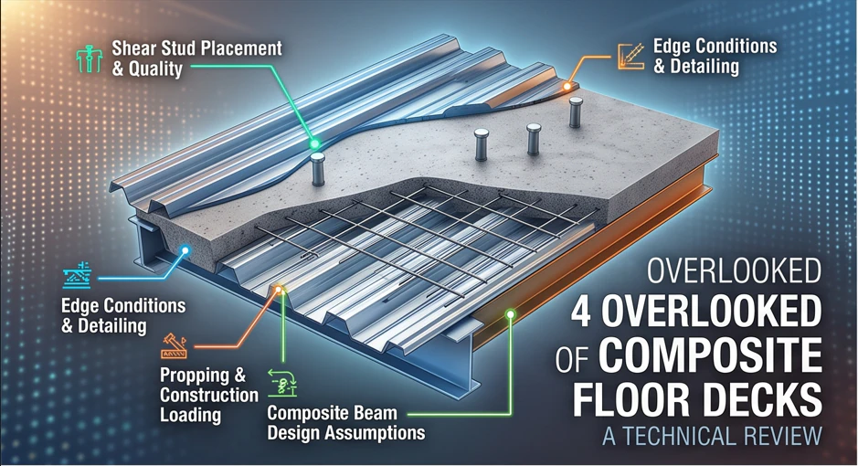
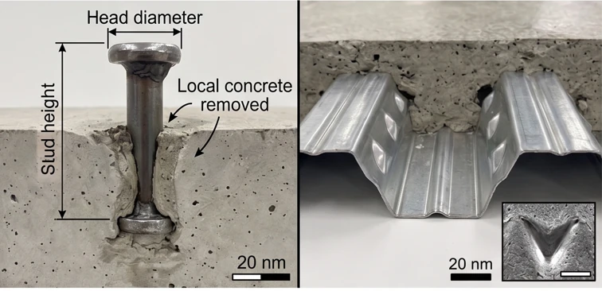
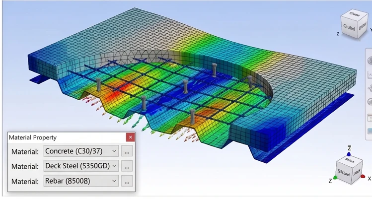
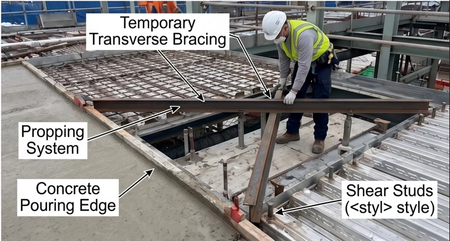
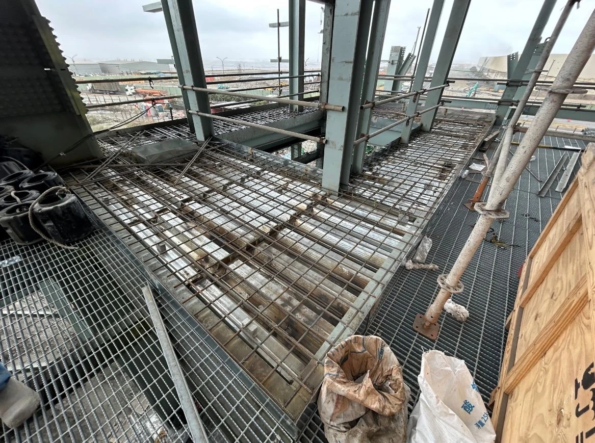

1. Sàn Deck là gì?
Sàn deck dùng tấm tôn định hình làm coffa, bê tông đổ lên trên. Có hai loại khác nhau về bản chất:
- Composite deck: tôn có gân dập (embossment), khóa cơ học với bê tông, tôn chính là cốt chịu kéo.
- Form deck: tôn chỉ làm coffa, cốt thép tính toàn/bố trí riêng.
Ưu điểm khi dùng cho công trình sử dụng kết cấu thép:
- Giảm tối đa giàn giáo chống đỡ; tấm tôn trở thành mặt bằng thi công an toàn.
- Tốc độ thi công nhanh, đồng bộ với tiến độ lắp dựng kết cấu thép; sóng tôn rỗng làm giảm tải trọng bản thân so với sàn đặc cùng nhịp, và là không gian sẵn có để luồn ống, cáp điện.


2. Mô hình hoá trong phần mềm phân tích
Ba loại tiết diện tấm (Area Section Type) cung cấp ba cách ứng xử khác nhau:
- Plate: chịu uốn và cắt ngoài mặt phẳng.
- Membrane: chịu kéo nén trong mặt phẳng (f11, f22, f12).
- Shell: kết hợp cả Plate và Membrane.
Riêng với Shell và Plate, phần mềm phân tích còn phân biệt theo cách ứng xử biến dạng cắt ngang:
- Thin: bỏ qua biến dạng cắt ngang ngoài mặt phẳng (tỷ lệ chiều dày/nhịp cạnh ngắn của sàn < 1/10–1/20).
- Thick: có kể đến biến dạng cắt ngang (tỷ lệ chiều dày/nhịp cạnh ngắn của sàn > 1/5–1/10).
Tùy chọn này không áp dụng cho Membrane.
Điểm ít được để ý: sàn dày 200 mm không có 200 mm bê tông đặc — phần sóng tôn là rỗng, và độ cứng trong mặt phẳng chỉ do lớp bê tông phủ trên đỉnh sóng đảm nhiệm. Sàn deck dị hướng: độ cứng theo phương song song sóng tôn nhỏ hơn hẳn phương vuông góc, nên f11 ≠ f22.
Về diaphragm, khác biệt cốt lõi:
- Rigid là một ràng buộc động học, hoạt động độc lập với độ cứng của tấm. Rigid vẫn ảnh hưởng ngay cả khi Stiffness Modifiers = 0 hoặc Section Properties = None.
- Semi-rigid thì ngược lại, toàn bộ ứng xử dựa vào độ cứng membrane thực của tấm (f11, f22, f12). Semi-rigid chỉ có tác dụng khi Section Type = Shell hoặc Membrane với Stiffness Modifiers > 0.
Semi-rigid mất ý nghĩa nếu Section Type = Plate, hoặc Properties = None, hoặc Stiffness Modifiers = 0: không có đường truyền lực ngang, và yêu cầu lệch tâm ngẫu nhiên 5% cũng không được áp đặt đúng.

3. Hai kiểu liên kết thiết bị
Qua bệ RC trên sàn (anchor bolt hoặc embedded part đặt trong bệ): tải đi vào sàn. Sàn deck có chiều dày hữu hiệu mỏng và bị chi phối bởi chọc thủng, nên hướng này phù hợp với support nhỏ và trung bình — pipe support cho ống nhỏ, bệ máy bơm, bệ máy nén. Lắp đặt phải chờ bệ đủ cường độ, tức là bị ràng buộc trình tự.
Trực tiếp vào dầm thép bên dưới, xuyên qua sàn: tải bỏ qua sàn và đi thẳng vào cấu kiện vốn được thiết kế để chịu nó. Đây là hướng cho thiết bị nặng — bồn đứng, bồn ngang, thiết bị có tải ngang lớn. Đổi lại: phải lắp trước khi đổ bê tông, và cần chi tiết mối nối riêng — cốt thép gia cường quanh lỗ mở, xử lý chống thấm và khe co giãn tại mặt tiếp giáp.
So sánh hai kiểu
| Có bệ RC | Không bệ RC | Ghi chú | |
|---|---|---|---|
| Đặc tính kết cấu | Gối tựa trên sàn | Gối tựa kết cấu | |
| Truyền tải | Hạn chế | Ít ràng buộc hơn | |
| Trình tự lắp dựng | Sau khi rót vữa bệ | Trước khi đổ sàn | Cần chi tiết mối nối đặc biệt; không bệ RC thì không ràng buộc trình tự |
Phạm vi áp dụng
| Có bệ RC | Không bệ RC | Ghi chú | |
|---|---|---|---|
| Thiết bị đứng | ✗ | ✓ | |
| Thiết bị nằm ngang | ✗ | ✓ | |
| Bơm & máy nén | ✓ | ✗ | Không áp dụng cho máy nén kiểu khung |
| Kết cấu thép | ✓ với support nhỏ ✗ với support lớn | ✓ | |
| Giá đỡ ống | ✓ với support nhỏ ✗ với support lớn | – |
Bơm & máy nén thoạt nhìn có vẻ ngược với nguyên tắc “tải nặng thì đi thẳng vào dầm”. Lý do không nằm ở độ lớn tải mà ở rung động: bệ bê tông cung cấp khối lượng và cản để hấp thụ dao động từ máy quay, trong khi nối cứng trực tiếp vào dầm thép sẽ truyền rung vào hệ kết cấu.
4. Giai đoạn thi công và giằng ngang tạm
Trước khi bê tông đạt cường độ, diaphragm chưa tồn tại. Đây là điều dễ bị bỏ sót nhất, và nó lấy đi cùng lúc hai thứ:
- Đường truyền lực ngang: sàn chưa có độ cứng trong mặt phẳng để phân phối tải ngang về hệ chịu lực chính.
- Giằng chống oằn ngang cho dầm: cánh nén của dầm thép mất điểm tựa ngang, khả năng chịu uốn bị chi phối bởi mất ổn định ngang.
Kỹ sư thiết kế cần kể đến sự không làm việc của tấm sàn trong giai đoạn này. Thiết kế một hệ giằng ngang tạm thời hoặc hệ giằng vĩnh viễn là cần thiết.

Kết
Sàn deck trông đơn giản, nhưng phần lớn sai sót không nằm ở chiều dày hay cấp bê tông — mà ở giả định mô hình và ở đường truyền lực. Bốn điểm trên đều xuất phát từ một câu hỏi duy nhất: lực này thực sự đi đâu?

Bài viết thuộc series "Hướng dẫn thiết kế kết cấu Công trình Công nghiệp" — Roberto Structural. Nội dung mang tính hướng dẫn kỹ thuật; kỹ sư chịu trách nhiệm kiểm tra và hiệu chỉnh theo điều kiện cụ thể của từng dự án và yêu cầu của tiêu chuẩn áp dụng.